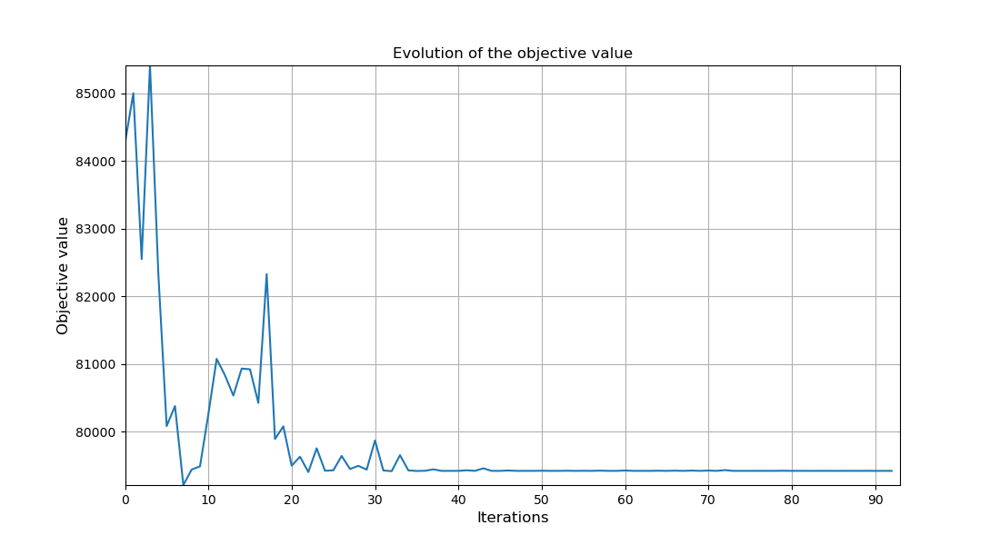

Note
Click here to download the full example code
LH2pac Optimization 100 iterations#
We want to optimize our real model through a 100 iterations
from gemseo.api import configure_logger
from discipline import H2TurboFan
from plot_mon_design_space import lh2pacDesignSpace
from gemseo.api import create_scenario
from matplotlib import pyplot as plt
from marilib.utils import unit
Before starting, we activate the logger as an optimization process logs meaningful information.
configure_logger()
<RootLogger root (INFO)>
Firstly, we define the discipline computing the h2turbofan
discipline = H2TurboFan()
Then, we instantiate the design space:
design_space = lh2pacDesignSpace()
print(design_space)
Design space:
+--------------+-------------+--------+-------------+-------+
| name | lower_bound | value | upper_bound | type |
+--------------+-------------+--------+-------------+-------+
| thrust | 100000 | 125000 | 150000 | float |
| bpr | 5 | 8.5 | 12 | float |
| area | 120 | 160 | 200 | float |
| aspect_ratio | 7 | 9.5 | 12 | float |
+--------------+-------------+--------+-------------+-------+
Thirdly, we put these elements together in a scenario
scenario = create_scenario([discipline], "DisciplinaryOpt", "mtow", design_space)
scenario.add_constraint("tofl", "ineq", positive=False, value = 2200.)
scenario.add_constraint("vapp", "ineq", positive=False, value = unit.mps_kt(137.))
scenario.add_constraint("vz_mcl", "ineq", positive=True, value = unit.mps_ftpmin(300.))
scenario.add_constraint("vz_mcr", "ineq", positive=True, value = unit.mps_ftpmin(0.))
scenario.add_constraint("oei_path", "ineq", positive=True, value=0.0011)
scenario.add_constraint("ttc", "ineq", positive=False, value=unit.s_min(25.))
scenario.add_constraint("far", "ineq", positive=False, value=13.4)
before executing it with a gradient-free optimizer:
scenario.execute({"algo": "NLOPT_COBYLA", "max_iter": 100})
INFO - 21:45:46:
INFO - 21:45:46: *** Start MDOScenario execution ***
INFO - 21:45:46: MDOScenario
INFO - 21:45:46: Disciplines: H2TurboFan
INFO - 21:45:46: MDO formulation: DisciplinaryOpt
INFO - 21:45:46: Optimization problem:
INFO - 21:45:46: minimize mtow(thrust, bpr, area, aspect_ratio)
INFO - 21:45:46: with respect to area, aspect_ratio, bpr, thrust
INFO - 21:45:46: subject to constraints:
INFO - 21:45:46: tofl(thrust, bpr, area, aspect_ratio) <= 2200.0
INFO - 21:45:46: vapp(thrust, bpr, area, aspect_ratio) <= 70.47888888888889
INFO - 21:45:46: vz_mcl(thrust, bpr, area, aspect_ratio) >= 1.524
INFO - 21:45:46: vz_mcr(thrust, bpr, area, aspect_ratio) >= 0.0
INFO - 21:45:46: oei_path(thrust, bpr, area, aspect_ratio) >= 0.0011
INFO - 21:45:46: ttc(thrust, bpr, area, aspect_ratio) <= 1500.0
INFO - 21:45:46: far(thrust, bpr, area, aspect_ratio) <= 13.4
INFO - 21:45:46: over the design space:
INFO - 21:45:46: +--------------+-------------+--------+-------------+-------+
INFO - 21:45:46: | name | lower_bound | value | upper_bound | type |
INFO - 21:45:46: +--------------+-------------+--------+-------------+-------+
INFO - 21:45:46: | thrust | 100000 | 125000 | 150000 | float |
INFO - 21:45:46: | bpr | 5 | 8.5 | 12 | float |
INFO - 21:45:46: | area | 120 | 160 | 200 | float |
INFO - 21:45:46: | aspect_ratio | 7 | 9.5 | 12 | float |
INFO - 21:45:46: +--------------+-------------+--------+-------------+-------+
INFO - 21:45:46: Solving optimization problem with algorithm NLOPT_COBYLA:
INFO - 21:45:46: ... 0%| | 0/100 [00:00<?, ?it]
INFO - 21:45:47: ... 1%| | 1/100 [00:00<00:00, 152.34 it/sec]
INFO - 21:45:47: ... 2%|▏ | 2/100 [00:01<00:01, 77.75 it/sec, obj=8.5e+4]
INFO - 21:45:48: ... 3%|▎ | 3/100 [00:01<00:01, 50.23 it/sec, obj=8.26e+4]
INFO - 21:45:48: ... 4%|▍ | 4/100 [00:02<00:02, 38.11 it/sec, obj=8.54e+4]
INFO - 21:45:49: ... 5%|▌ | 5/100 [00:03<00:03, 29.96 it/sec, obj=8.23e+4]
INFO - 21:45:50: ... 6%|▌ | 6/100 [00:04<00:03, 24.72 it/sec, obj=8.01e+4]
INFO - 21:45:51: ... 7%|▋ | 7/100 [00:04<00:04, 21.03 it/sec, obj=8.04e+4]
INFO - 21:45:51: ... 8%|▊ | 8/100 [00:05<00:05, 18.26 it/sec, obj=7.92e+4]
INFO - 21:45:52: ... 9%|▉ | 9/100 [00:06<00:05, 16.20 it/sec, obj=7.94e+4]
INFO - 21:45:53: ... 10%|█ | 10/100 [00:06<00:06, 14.53 it/sec, obj=7.95e+4]
INFO - 21:45:53: ... 11%|█ | 11/100 [00:07<00:06, 13.16 it/sec, obj=8.03e+4]
INFO - 21:45:54: ... 12%|█▏ | 12/100 [00:08<00:07, 12.03 it/sec, obj=8.11e+4]
INFO - 21:45:55: ... 13%|█▎ | 13/100 [00:09<00:07, 11.07 it/sec, obj=8.08e+4]
INFO - 21:45:56: ... 14%|█▍ | 14/100 [00:09<00:08, 10.26 it/sec, obj=8.05e+4]
INFO - 21:45:56: ... 15%|█▌ | 15/100 [00:10<00:08, 9.56 it/sec, obj=8.09e+4]
INFO - 21:45:57: ... 16%|█▌ | 16/100 [00:11<00:09, 8.94 it/sec, obj=8.09e+4]
INFO - 21:45:58: ... 17%|█▋ | 17/100 [00:11<00:09, 8.40 it/sec, obj=8.04e+4]
INFO - 21:45:58: ... 18%|█▊ | 18/100 [00:12<00:10, 7.93 it/sec, obj=8.23e+4]
INFO - 21:45:59: ... 19%|█▉ | 19/100 [00:13<00:10, 7.50 it/sec, obj=7.99e+4]
INFO - 21:46:00: ... 20%|██ | 20/100 [00:14<00:11, 7.11 it/sec, obj=8.01e+4]
INFO - 21:46:01: ... 21%|██ | 21/100 [00:14<00:11, 6.77 it/sec, obj=7.95e+4]
INFO - 21:46:01: ... 22%|██▏ | 22/100 [00:15<00:12, 6.46 it/sec, obj=7.96e+4]
INFO - 21:46:02: ... 23%|██▎ | 23/100 [00:16<00:12, 6.18 it/sec, obj=7.94e+4]
INFO - 21:46:03: ... 24%|██▍ | 24/100 [00:16<00:12, 5.91 it/sec, obj=7.98e+4]
INFO - 21:46:03: ... 25%|██▌ | 25/100 [00:17<00:13, 5.67 it/sec, obj=7.94e+4]
INFO - 21:46:04: ... 26%|██▌ | 26/100 [00:18<00:13, 5.46 it/sec, obj=7.94e+4]
INFO - 21:46:05: ... 27%|██▋ | 27/100 [00:19<00:13, 5.25 it/sec, obj=7.96e+4]
INFO - 21:46:06: ... 28%|██▊ | 28/100 [00:19<00:14, 5.06 it/sec, obj=7.94e+4]
INFO - 21:46:06: ... 29%|██▉ | 29/100 [00:20<00:14, 4.89 it/sec, obj=7.95e+4]
INFO - 21:46:07: ... 30%|███ | 30/100 [00:21<00:14, 4.71 it/sec, obj=7.94e+4]
INFO - 21:46:08: ... 31%|███ | 31/100 [00:21<00:15, 4.56 it/sec, obj=7.99e+4]
INFO - 21:46:09: ... 32%|███▏ | 32/100 [00:22<00:15, 4.41 it/sec, obj=7.94e+4]
INFO - 21:46:09: ... 33%|███▎ | 33/100 [00:23<00:15, 4.28 it/sec, obj=7.94e+4]
INFO - 21:46:10: ... 34%|███▍ | 34/100 [00:24<00:15, 4.15 it/sec, obj=7.97e+4]
INFO - 21:46:11: ... 35%|███▌ | 35/100 [00:24<00:16, 4.03 it/sec, obj=7.94e+4]
INFO - 21:46:11: ... 36%|███▌ | 36/100 [00:25<00:16, 3.92 it/sec, obj=7.94e+4]
INFO - 21:46:12: ... 37%|███▋ | 37/100 [00:26<00:16, 3.81 it/sec, obj=7.94e+4]
INFO - 21:46:13: ... 38%|███▊ | 38/100 [00:26<00:16, 3.71 it/sec, obj=7.94e+4]
INFO - 21:46:14: ... 39%|███▉ | 39/100 [00:27<00:16, 3.61 it/sec, obj=7.94e+4]
INFO - 21:46:14: ... 40%|████ | 40/100 [00:28<00:17, 3.52 it/sec, obj=7.94e+4]
INFO - 21:46:15: ... 41%|████ | 41/100 [00:29<00:17, 3.43 it/sec, obj=7.94e+4]
INFO - 21:46:16: ... 42%|████▏ | 42/100 [00:29<00:17, 3.35 it/sec, obj=7.94e+4]
INFO - 21:46:16: ... 43%|████▎ | 43/100 [00:30<00:17, 3.27 it/sec, obj=7.94e+4]
INFO - 21:46:17: ... 44%|████▍ | 44/100 [00:31<00:17, 3.20 it/sec, obj=7.95e+4]
INFO - 21:46:18: ... 45%|████▌ | 45/100 [00:32<00:17, 3.12 it/sec, obj=7.94e+4]
INFO - 21:46:19: ... 46%|████▌ | 46/100 [00:32<00:17, 3.05 it/sec, obj=7.94e+4]
INFO - 21:46:19: ... 47%|████▋ | 47/100 [00:33<00:17, 2.99 it/sec, obj=7.94e+4]
INFO - 21:46:20: ... 48%|████▊ | 48/100 [00:34<00:17, 2.93 it/sec, obj=7.94e+4]
INFO - 21:46:21: ... 49%|████▉ | 49/100 [00:34<00:17, 2.87 it/sec, obj=7.94e+4]
INFO - 21:46:21: ... 50%|█████ | 50/100 [00:35<00:17, 2.81 it/sec, obj=7.94e+4]
INFO - 21:46:22: ... 51%|█████ | 51/100 [00:36<00:17, 2.75 it/sec, obj=7.94e+4]
INFO - 21:46:23: ... 52%|█████▏ | 52/100 [00:37<00:17, 2.70 it/sec, obj=7.94e+4]
INFO - 21:46:24: ... 53%|█████▎ | 53/100 [00:37<00:17, 2.65 it/sec, obj=7.94e+4]
INFO - 21:46:24: ... 54%|█████▍ | 54/100 [00:38<00:17, 2.60 it/sec, obj=7.94e+4]
INFO - 21:46:25: ... 55%|█████▌ | 55/100 [00:39<00:17, 2.55 it/sec, obj=7.94e+4]
INFO - 21:46:26: ... 56%|█████▌ | 56/100 [00:39<00:17, 2.51 it/sec, obj=7.94e+4]
INFO - 21:46:26: ... 57%|█████▋ | 57/100 [00:40<00:17, 2.46 it/sec, obj=7.94e+4]
INFO - 21:46:27: ... 58%|█████▊ | 58/100 [00:41<00:17, 2.42 it/sec, obj=7.94e+4]
INFO - 21:46:28: ... 59%|█████▉ | 59/100 [00:42<00:17, 2.38 it/sec, obj=7.94e+4]
INFO - 21:46:29: ... 60%|██████ | 60/100 [00:42<00:17, 2.34 it/sec, obj=7.94e+4]
INFO - 21:46:29: ... 61%|██████ | 61/100 [00:43<00:16, 2.30 it/sec, obj=7.94e+4]
INFO - 21:46:30: ... 62%|██████▏ | 62/100 [00:44<00:16, 2.26 it/sec, obj=7.94e+4]
INFO - 21:46:31: ... 63%|██████▎ | 63/100 [00:44<00:16, 2.22 it/sec, obj=7.94e+4]
INFO - 21:46:32: ... 64%|██████▍ | 64/100 [00:45<00:16, 2.19 it/sec, obj=7.94e+4]
INFO - 21:46:32: ... 65%|██████▌ | 65/100 [00:46<00:16, 2.16 it/sec, obj=7.94e+4]
INFO - 21:46:33: ... 66%|██████▌ | 66/100 [00:47<00:16, 2.12 it/sec, obj=7.94e+4]
INFO - 21:46:34: ... 67%|██████▋ | 67/100 [00:47<00:15, 2.09 it/sec, obj=7.94e+4]
INFO - 21:46:34: ... 68%|██████▊ | 68/100 [00:48<00:15, 2.06 it/sec, obj=7.94e+4]
INFO - 21:46:35: ... 69%|██████▉ | 69/100 [00:49<00:15, 2.03 it/sec, obj=7.94e+4]
INFO - 21:46:36: ... 70%|███████ | 70/100 [00:50<00:15, 2.00 it/sec, obj=7.94e+4]
INFO - 21:46:37: ... 71%|███████ | 71/100 [00:50<00:14, 1.97 it/sec, obj=7.94e+4]
INFO - 21:46:37: ... 72%|███████▏ | 72/100 [00:51<00:14, 1.94 it/sec, obj=7.94e+4]
INFO - 21:46:38: ... 73%|███████▎ | 73/100 [00:52<00:14, 1.92 it/sec, obj=7.94e+4]
INFO - 21:46:39: ... 74%|███████▍ | 74/100 [00:52<00:13, 1.89 it/sec, obj=7.94e+4]
INFO - 21:46:40: ... 75%|███████▌ | 75/100 [00:53<00:13, 1.86 it/sec, obj=7.94e+4]
INFO - 21:46:40: ... 76%|███████▌ | 76/100 [00:54<00:13, 1.84 it/sec, obj=7.94e+4]
INFO - 21:46:41: ... 77%|███████▋ | 77/100 [00:55<00:12, 1.82 it/sec, obj=7.94e+4]
INFO - 21:46:42: ... 78%|███████▊ | 78/100 [00:55<00:12, 1.79 it/sec, obj=7.94e+4]
INFO - 21:46:42: ... 79%|███████▉ | 79/100 [00:56<00:11, 1.77 it/sec, obj=7.94e+4]
INFO - 21:46:43: ... 80%|████████ | 80/100 [00:57<00:11, 1.75 it/sec, obj=7.94e+4]
INFO - 21:46:44: ... 81%|████████ | 81/100 [00:57<00:11, 1.72 it/sec, obj=7.94e+4]
INFO - 21:46:45: ... 82%|████████▏ | 82/100 [00:58<00:10, 1.70 it/sec, obj=7.94e+4]
INFO - 21:46:45: ... 83%|████████▎ | 83/100 [00:59<00:10, 1.68 it/sec, obj=7.94e+4]
INFO - 21:46:46: ... 84%|████████▍ | 84/100 [01:00<00:09, 1.66 it/sec, obj=7.94e+4]
INFO - 21:46:47: ... 85%|████████▌ | 85/100 [01:00<00:09, 1.64 it/sec, obj=7.94e+4]
INFO - 21:46:47: ... 86%|████████▌ | 86/100 [01:01<00:08, 1.62 it/sec, obj=7.94e+4]
INFO - 21:46:48: ... 87%|████████▋ | 87/100 [01:02<00:08, 1.60 it/sec, obj=7.94e+4]
INFO - 21:46:49: ... 88%|████████▊ | 88/100 [01:03<00:07, 1.59 it/sec, obj=7.94e+4]
INFO - 21:46:50: ... 89%|████████▉ | 89/100 [01:03<00:07, 1.57 it/sec, obj=7.94e+4]
INFO - 21:46:50: ... 90%|█████████ | 90/100 [01:04<00:06, 1.55 it/sec, obj=7.94e+4]
INFO - 21:46:51: ... 91%|█████████ | 91/100 [01:05<00:05, 1.53 it/sec, obj=7.94e+4]
INFO - 21:46:52: ... 92%|█████████▏| 92/100 [01:06<00:05, 1.51 it/sec, obj=7.94e+4]
INFO - 21:46:53: ... 93%|█████████▎| 93/100 [01:06<00:04, 1.49 it/sec, obj=7.94e+4]
INFO - 21:46:53: ... 93%|█████████▎| 93/100 [01:06<00:04, 1.49 it/sec, obj=7.94e+4]
INFO - 21:46:53: Optimization result:
INFO - 21:46:53: Optimizer info:
INFO - 21:46:53: Status: None
INFO - 21:46:53: Message: Successive iterates of the objective function are closer than ftol_rel or ftol_abs. GEMSEO Stopped the driver
INFO - 21:46:53: Number of calls to the objective function by the optimizer: 94
INFO - 21:46:53: Solution:
INFO - 21:46:53: The solution is feasible.
INFO - 21:46:53: Objective: 79420.33251933809
INFO - 21:46:53: Standardized constraints:
INFO - 21:46:53: -oei_path + 0.0011 = -0.01584830763118653
INFO - 21:46:53: -vz_mcl + 1.524 = -2.943458762931157
INFO - 21:46:53: -vz_mcr - +0.0 = -0.21303771567491128
INFO - 21:46:53: far - 13.4 = -0.7500222020441019
INFO - 21:46:53: tofl - 2200.0 = 6.620629255849053e-05
INFO - 21:46:53: ttc - 1500.0 = -297.4363778833981
INFO - 21:46:53: vapp - 70.47888888888889 = 5.121075901115546e-07
INFO - 21:46:53: Design space:
INFO - 21:46:53: +--------------+-------------+-------------------+-------------+-------+
INFO - 21:46:53: | name | lower_bound | value | upper_bound | type |
INFO - 21:46:53: +--------------+-------------+-------------------+-------------+-------+
INFO - 21:46:53: | thrust | 100000 | 110659.5301298832 | 150000 | float |
INFO - 21:46:53: | bpr | 5 | 12 | 12 | float |
INFO - 21:46:53: | area | 120 | 152.8360187103151 | 200 | float |
INFO - 21:46:53: | aspect_ratio | 7 | 10.97751460977898 | 12 | float |
INFO - 21:46:53: +--------------+-------------+-------------------+-------------+-------+
INFO - 21:46:53: *** End MDOScenario execution (time: 0:01:06.933277) ***
{'max_iter': 100, 'algo': 'NLOPT_COBYLA'}
Lastly, we can plot the optimization history:
scenario.post_process("OptHistoryView", save=False, show=False, \
file_path = "H2TurboFan100")
plt.show()
- 
Total running time of the script: ( 1 minutes 8.091 seconds)